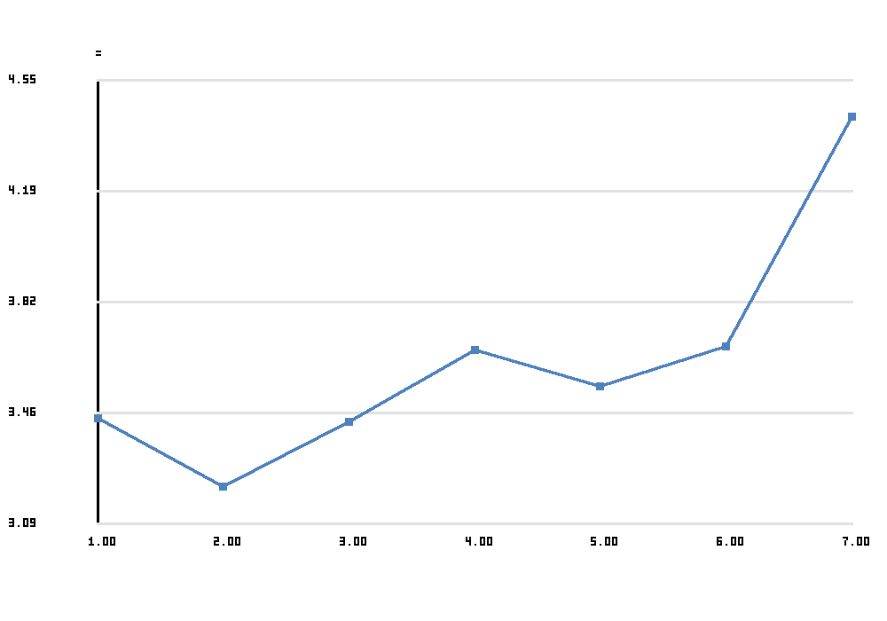
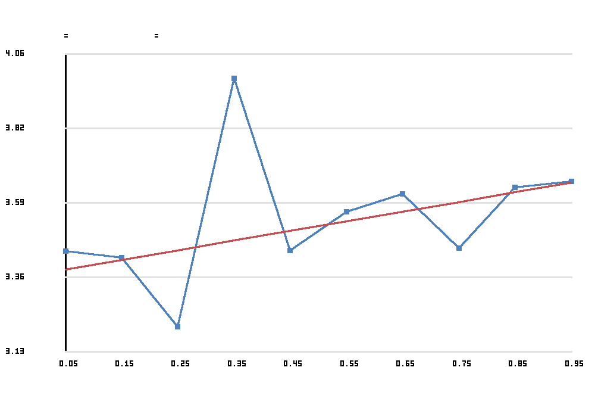
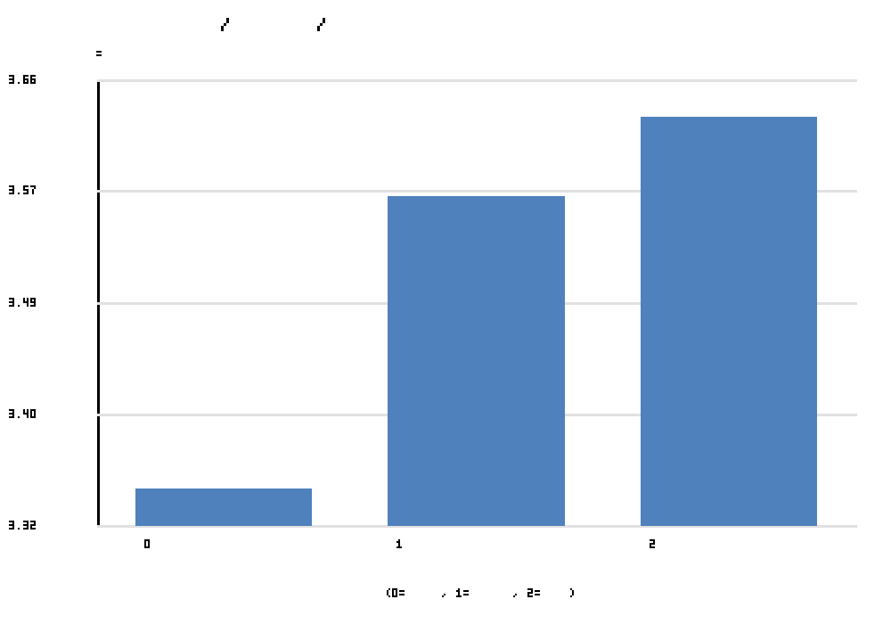
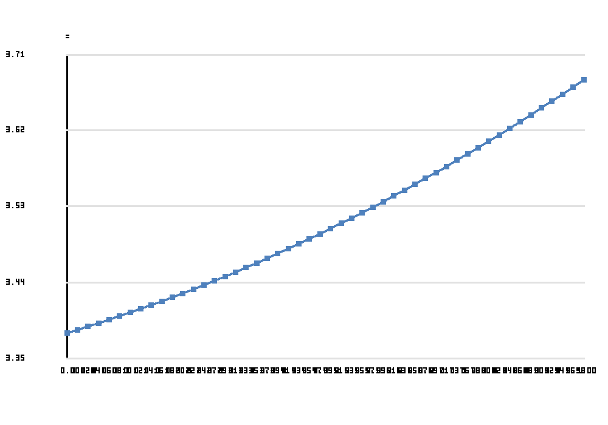
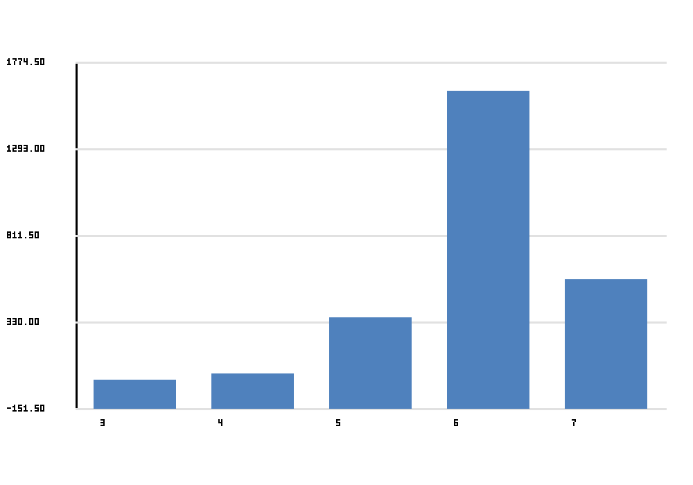

This site summarizes a ballot-level analysis of speaking order and judge-assigned rank in extemporaneous speaking rounds drawn from a Gabrielino-attended Tabroom tournament set. Lower rank is better.
Each observation is a competitor-by-judge row from a round-results ballot. Panels were cleaned so speaking positions start at 1, run contiguously, and contain no duplicate competitors within the same tournament + event + round_id + judge panel.
The clearest overall result is: primacy bias.
This interpretation is based on cleaned ballot data, descriptive means, and linear / quadratic models where lower rank indicates a better outcome.




